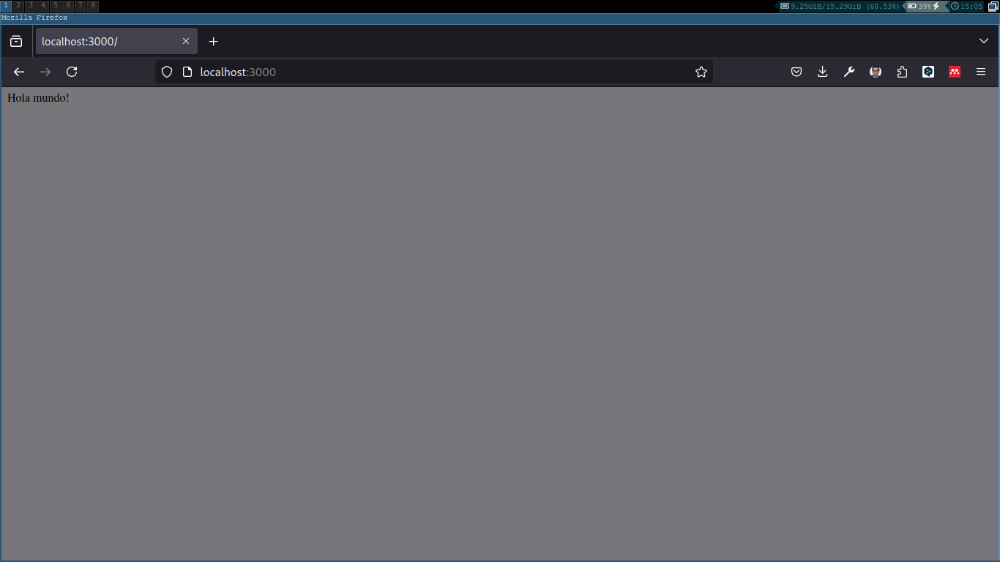
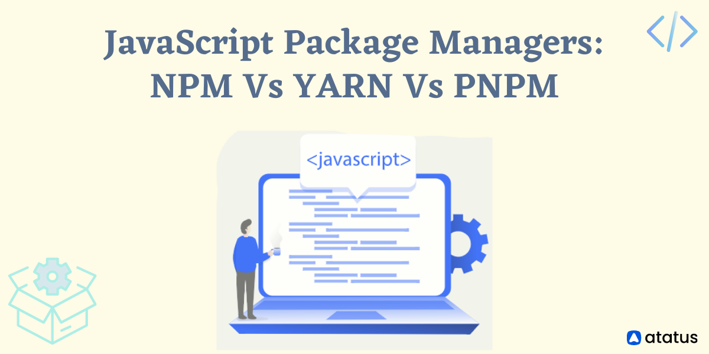

Nodejs

Nodejs es muy importante para el desarrollo de aplicaciones web, ya que es un entorno de ejecución de JavaScript que permite ejecutar código JavaScript en el servidor. Nodejs es muy popular en el desarrollo de aplicaciones web, ya que permite crear aplicaciones web de forma rápida y sencilla.
En esta sección analizaremos las características de Nodejs y cómo podemos utilizarlo para desarrollar aplicaciones web para posteriormente adentrarnos en Reactjs.
Características de Nodejs
Nodejs es un entorno de ejecución de JavaScript que permite ejecutar código JavaScript en el servidor. Nodejs es muy popular en el desarrollo de aplicaciones web, ya que permite crear aplicaciones web de forma rápida y sencilla.
Algunas de las características de Nodejs son:
JavaScript en el servidor: Nodejs permite ejecutar código JavaScript en el servidor, lo que facilita la creación de aplicaciones web.
Event-driven: Nodejs es un entorno de ejecución event-driven, lo que significa que las operaciones se realizan de forma asíncrona y no bloqueante.
I/O no bloqueante: Nodejs utiliza un modelo de I/O no bloqueante, lo que permite realizar operaciones de entrada/salida de forma asíncrona y no bloqueante.
Módulos: Nodejs permite utilizar módulos para organizar el código en diferentes archivos y reutilizarlo en diferentes partes de la aplicación.
NPM: Nodejs cuenta con un gestor de paquetes llamado NPM que permite instalar y gestionar paquetes de código JavaScript de forma sencilla.
APIs: Nodejs cuenta con un conjunto de APIs que permiten interactuar con el sistema operativo, el sistema de archivos, la red, etc.
Escalabilidad: Nodejs es muy escalable y permite manejar un gran número de conexiones simultáneas de forma eficiente.
Comunidad: Nodejs cuenta con una gran comunidad de desarrolladores que contribuyen con la creación de paquetes y herramientas para el desarrollo de aplicaciones web.
Instalación de Nodejs
Para instalar Nodejs en tu sistema operativo, puedes descargar el instalador desde la página oficial de Nodejs: https://nodejs.org/.
Una vez descargado el instalador, puedes seguir las instrucciones de instalación para instalar Nodejs en tu sistema operativo.
Utilizando nodejs
Una vez instalado Nodejs en tu sistema operativo, puedes utilizar el comando node para ejecutar código JavaScript en el servidor. Por ejemplo, puedes crear un archivo hola-mundo.js con el siguiente código:
console.log('Hola mundo!');
console.info('Información');
console.warn('Advertencia');
console.error('Error');Para ejecutar el archivo hola-mundo.js, puedes utilizar el siguiente comando:
node hola-mundo.js:::{.justify} Al ejecutar el comando, verás el mensaje de “Hola mundo!” en la consola del sistema operativo.
Lógica de la programación con nodejs
Para realizar operaciones más complejas con Nodejs, puedes utilizar módulos para organizar el código en diferentes archivos y reutilizarlo en diferentes partes de la aplicación. Por ejemplo, puedes crear un módulo operaciones.js con las siguientes funciones:
function sumar(a, b) {
return a + b;
}
function restar(a, b) {
return a - b;
}
function multiplicar(a, b) {
return a * b;
}
function dividir(a, b) {
return a / b;
}
module.exports = {
sumar,
restar,
multiplicar,
dividir
};Para utilizar el módulo operaciones.js en otro archivo, puedes utilizar la función require de Nodejs. Por ejemplo, puedes crear un archivo index.js con el siguiente código:
const operaciones = require('./operaciones');
console.log('Suma:', operaciones.sumar(2, 3));
console.log('Resta:', operaciones.restar(5, 3));
console.log('Multiplicación:', operaciones.multiplicar(2, 3));
console.log('División:', operaciones.dividir(6, 3));Para ejecutar el archivo index.js, puedes utilizar el siguiente comando:
node index.jsAl ejecutar el comando, verás los resultados de las operaciones matemáticas en la consola del sistema operativo.
GlobalThis
Nodejs cuenta con un objeto global llamado globalThis que permite acceder a las variables y funciones globales en el entorno de ejecución de Nodejs. Por ejemplo, puedes utilizar el objeto globalThis para acceder a las variables y funciones globales en el entorno de ejecución de Nodejs.
Por ejemplo, puedes utilizar el objeto globalThis para acceder a la variable process que contiene información sobre el proceso de Nodejs. Por ejemplo, puedes acceder a la versión de Nodejs con la siguiente instrucción:
console.log(globalThis.process.version);Al ejecutar la instrucción, verás la versión de Nodejs en la consola del sistema operativo.
Conclusiones
Nodejs es un entorno de ejecución de JavaScript que permite ejecutar código JavaScript en el servidor. Nodejs es muy popular en el desarrollo de aplicaciones web, ya que permite crear aplicaciones web de forma rápida y sencilla.
En esta sección hemos analizado las características de Nodejs y cómo podemos utilizarlo para desarrollar aplicaciones web. En la siguiente sección nos adentraremos en Reactjs y veremos cómo podemos utilizarlo en el desarrollo de aplicaciones web con Nodejs.
Creación de una aplicación web con Nodejs
Para crear una aplicación web con Nodejs, puedes seguir los siguientes pasos:
- Crea un directorio para tu aplicación web:
mkdir mi-aplicacion-web
cd mi-aplicacion-web- Inicializa un proyecto de Nodejs:
npm init -y- Instala el paquete express para crear un servidor web:
npm install express- Crea un archivo index.js con el siguiente código:
const express = require('express');
const app = express();
app.get('/', (req, res) => {
res.send('Hola mundo!');
});
app.listen(3000, () => {
console.log('Servidor web iniciado en el puerto 3000');
});- Inicia el servidor web:
node index.js- Abre tu navegador y accede a la dirección http://localhost:3000/.

Con estos pasos has creado una aplicación web con Nodejs que muestra un mensaje de “Hola mundo!” en el navegador.
Conclusiones
Nodejs es un entorno de ejecución de JavaScript que permite ejecutar código JavaScript en el servidor. Nodejs es muy popular en el desarrollo de aplicaciones web, ya que permite crear aplicaciones web de forma rápida y sencilla.
En esta sección hemos analizado las características de Nodejs y cómo podemos utilizarlo para desarrollar aplicaciones web. En la siguiente sección nos adentraremos en Reactjs y veremos cómo podemos utilizarlo en el desarrollo de aplicaciones web con Nodejs.
Alternativas a Nodejs
En el desarrollo de aplicaciones web existen diferentes alternativas a Nodejs que permiten ejecutar código JavaScript en el servidor. En esta sección analizaremos algunas de las alternativas a Nodejs y sus características.
Deno
Deno es un entorno de ejecución de JavaScript y TypeScript que permite ejecutar código JavaScript en el servidor. Deno es una alternativa a Nodejs que cuenta con algunas características interesantes como:
Seguridad: Deno utiliza un modelo de seguridad basado en permisos que permite controlar el acceso a los recursos del sistema.
TypeScript: Deno es compatible con TypeScript de forma nativa, lo que permite utilizar TypeScript en el desarrollo de aplicaciones web.
Módulos ESM: Deno utiliza módulos ESM (ECMAScript Modules) de forma nativa, lo que facilita la importación de módulos en el código JavaScript.
APIs: Deno cuenta con un conjunto de APIs que permiten interactuar con el sistema operativo, el sistema de archivos, la red, etc.
Gestor de paquetes: Deno cuenta con un gestor de paquetes llamado Deno que permite instalar y gestionar paquetes de código JavaScript de forma sencilla.
Creación de una aplicación web con Deno
Para crear una aplicación web con Deno, puedes seguir los siguientes pasos:
- Crea un archivo app.ts con el siguiente código:
import { Application, Router } from 'https://deno.land/x/oak/mod.ts';
const app = new Application();
const router = new Router();
router.get('/', (ctx) => {
ctx.response.body = 'Hola mundo!';
});
app.use(router.routes());
app.use(router.allowedMethods());
console.log('Servidor web iniciado en el puerto 3000');
await app.listen({ port: 3000 });- Inicia el servidor web:
deno run --allow-net app.ts- Abre tu navegador y accede a la dirección http://localhost:3000/.
Con estos pasos has creado una aplicación web con Deno que muestra un mensaje de “Hola mundo!” en el navegador.
Bun
Bun es un entorno de ejecución de JavaScript que permite ejecutar código JavaScript en el servidor. Bun es una alternativa a Nodejs que cuenta con algunas características interesantes como:
Velocidad: Bun es más rápido que Nodejs en la ejecución de código JavaScript en el servidor.
Módulos: Bun utiliza módulos de CommonJS para organizar el código en diferentes archivos y reutilizarlo en diferentes partes de la aplicación.
APIs: Bun cuenta con un conjunto de APIs que permiten interactuar con el sistema operativo, el sistema de archivos, la red, etc.
Gestor de paquetes: Bun cuenta con un gestor de paquetes llamado Bun que permite instalar y gestionar paquetes de código JavaScript de forma sencilla.
Creación de una aplicación web con Bun
Para crear una aplicación web con Bun, puedes seguir los siguientes pasos:
- Crea un archivo app.js con el siguiente código:
const http = require('http');
const server = http.createServer((req, res) => {
res.writeHead(200, { 'Content-Type': 'text/plain' });
res.end('Hola mundo!\n');
});
server.listen(3000, () => {
console.log('Servidor web iniciado en el puerto 3000');
});- Inicia el servidor web:
node app.js- Abre tu navegador y accede a la dirección http://localhost:3000/.
Con estos pasos has creado una aplicación web con Bun que muestra un mensaje de “Hola mundo!” en el navegador.
Conclusiones
En el desarrollo de aplicaciones web existen diferentes alternativas a Nodejs que permiten ejecutar código JavaScript en el servidor. En esta sección hemos analizado algunas de las alternativas a Nodejs como Deno y Bun y sus características.
En la siguiente sección nos adentraremos en Reactjs y veremos cómo podemos utilizarlo en el desarrollo de aplicaciones web con Nodejs.
Npm, Yarn y Pnpm

Introducción
En el desarrollo de aplicaciones web es muy común utilizar paquetes de código JavaScript de terceros para añadir funcionalidades a nuestras aplicaciones. Para gestionar estos paquetes de código JavaScript, existen diferentes gestores de paquetes como Npm, Yarn y Pnpm.
En esta sección analizaremos las características de Npm, Yarn y Pnpm y cómo podemos utilizarlos en el desarrollo de aplicaciones web.
Npm
:::{.justify} Npm (Node Package Manager) es el gestor de paquetes de Nodejs que permite instalar y gestionar paquetes de código JavaScript de terceros. Npm es muy popular en el desarrollo de aplicaciones web, ya que cuenta con un amplio repositorio de paquetes de código JavaScript.
Algunas de las características de Npm son:
Instalación de paquetes: Npm permite instalar paquetes de código JavaScript de terceros de forma sencilla.
Gestión de dependencias: Npm permite gestionar las dependencias de un proyecto y asegurar que las versiones de los paquetes sean compatibles.
Scripts: Npm permite ejecutar scripts de forma sencilla a través del archivo package.json.
Repositorio de paquetes: Npm cuenta con un amplio repositorio de paquetes de código JavaScript que pueden ser utilizados en el desarrollo de aplicaciones web.
Versionado semántico: Npm utiliza el versionado semántico para gestionar las versiones de los paquetes de código JavaScript.
Instalación de paquetes con Npm
Para instalar un paquete de código JavaScript con Npm, puedes utilizar el siguiente comando:
npm install nombre-del-paqueteEn la sección anterior aprendimos a crear un proyecto con NPM
Yarn
Yarn es otro gestor de paquetes de código JavaScript que permite instalar y gestionar paquetes de código JavaScript de terceros. Yarn es muy popular en el desarrollo de aplicaciones web, ya que cuenta con un amplio repositorio de paquetes de código JavaScript.
Algunas de las características de Yarn son:
Instalación de paquetes: Yarn permite instalar paquetes de código JavaScript de terceros de forma sencilla.
Gestión de dependencias: Yarn permite gestionar las dependencias de un proyecto y asegurar que las versiones de los paquetes sean compatibles.
Scripts: Yarn permite ejecutar scripts de forma sencilla a través del archivo package.json.
Repositorio de paquetes: Yarn cuenta con un amplio repositorio de paquetes de código JavaScript que pueden ser utilizados en el desarrollo de aplicaciones web.
Velocidad: Yarn es más rápido que Npm en la instalación de paquetes de código JavaScript.
Instalación de paquetes con Yarn
Para instalar un paquete de código JavaScript con Yarn, puedes utilizar el siguiente comando:
yarn add nombre-del-paqueteCrear un proyecto con Yarn
Para crear un proyecto con Yarn, puedes utilizar el siguiente comando:
yarn initPnpm
Pnpm es otro gestor de paquetes de código JavaScript que permite instalar y gestionar paquetes de código JavaScript de terceros. Pnpm es muy popular en el desarrollo de aplicaciones web, ya que cuenta con un amplio repositorio de paquetes de código JavaScript.
Algunas de las características de Pnpm son:
Instalación de paquetes: Pnpm permite instalar paquetes de código JavaScript de terceros de forma sencilla.
Gestión de dependencias: Pnpm permite gestionar las dependencias de un proyecto y asegurar que las versiones de los paquetes sean compatibles.
Scripts: Pnpm permite ejecutar scripts de forma sencilla a través del archivo package.json.
Repositorio de paquetes: Pnpm cuenta con un amplio repositorio de paquetes de código JavaScript que pueden ser utilizados en el desarrollo de aplicaciones web.
Espacio en disco: Pnpm utiliza un espacio en disco más eficiente que Npm y Yarn.
Instalación de paquetes con Pnpm
Para instalar un paquete de código JavaScript con Pnpm, puedes utilizar el siguiente comando:
pnpm add nombre-del-paqueteCrear un proyecto con Pnpm
Para crear un proyecto con Pnpm, puedes utilizar el siguiente comando:
pnpm initConclusiones
En el desarrollo de aplicaciones web es muy común utilizar paquetes de código JavaScript de terceros para añadir funcionalidades a nuestras aplicaciones. Para gestionar estos paquetes de código JavaScript, existen diferentes gestores de paquetes como Npm, Yarn y Pnpm.
En esta sección hemos analizado las características de Npm, Yarn y Pnpm y cómo podemos utilizarlos en el desarrollo de aplicaciones web. En la siguiente sección nos adentraremos en Reactjs y veremos cómo podemos utilizarlo en el desarrollo de aplicaciones web con Nodejs.
FNM
FNM es un gestor de versiones de Nodejs que permite cambiar de versión de Nodejs de forma sencilla. FNM es muy útil en el desarrollo de aplicaciones web, ya que permite utilizar diferentes versiones de Nodejs en un mismo sistema.
Algunas de las características de FNM son:
Instalación de versiones: FNM permite instalar diferentes versiones de Nodejs de forma sencilla.
Cambio de versión: FNM permite cambiar de versión de Nodejs de forma sencilla.
Gestión de versiones: FNM permite gestionar las versiones de Nodejs de forma sencilla.
Integración con Npm, Yarn y Pnpm: FNM es compatible con los gestores de paquetes Npm, Yarn y Pnpm.
Instalación de FNM
Para instalar FNM en tu sistema operativo, puedes utilizar el siguiente comando:
curl -fsSL https://fnm.vercel.app/install | bashUna vez instalado FNM, puedes utilizar los siguientes comandos para gestionar las versiones de Nodejs:
fnm install: Instala una versión de Nodejs.
fnm use: Cambia de versión de Nodejs.
fnm ls: Lista las versiones de Nodejs instaladas.
fnm default: Establece la versión de Nodejs por defecto.
Ejemplo de uso de FNM
Para instalar una versión de Nodejs con FNM, puedes utilizar el siguiente comando:
fnm install 14Para cambiar de versión de Nodejs con FNM, puedes utilizar el siguiente comando:
fnm use 14Para listar las versiones de Nodejs instaladas con FNM, puedes utilizar el siguiente comando:
fnm lsPara establecer la versión de Nodejs por defecto con FNM, puedes utilizar el siguiente comando:
fnm default 14Conclusiones
FNM es un gestor de versiones de Nodejs que permite cambiar de versión de Nodejs de forma sencilla. FNM es muy útil en el desarrollo de aplicaciones web, ya que permite utilizar diferentes versiones de Nodejs en un mismo sistema.
En esta sección hemos analizado las características de FNM y cómo podemos utilizarlo en el desarrollo de aplicaciones web. En la siguiente sección nos adentraremos en Reactjs y veremos cómo podemos utilizarlo en el desarrollo de aplicaciones web con Nodejs.